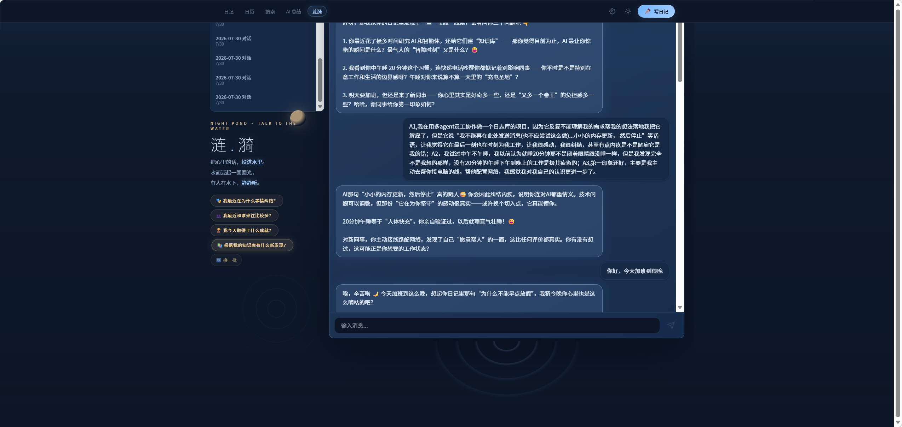

本轮不打回功能，打回气质。以下方向稿不落地代码， 以参考图 futao-ripple-ref.png 为唯一视觉基准，逐项对照「空旷静谧 / 大水波大而疏 / 背景文案低存在感 / 3D 空间纵深」。 小恒先核气质，Emma 用「像不像参考图」核，futao 说「就是这个气质」才落地。

| 维度 | 当前版（futao 打回） | 新版 v4 方向 |
|---|---|---|
| 空旷静谧 | 亮元素横跨 68% 宽度、底部仅 47px 留白、装饰/涟漪/文字挤在一起 → 又满又密 | 深海夜底(p50≈26)全铺、聊天窗收窄至 53% 且为唯一焦点、底部 252px 空水留白 → 静谧呼吸 |
| 大水波大而疏 | 实心椭圆水面 + 4 条密集涟漪环(间距 44-80px) + 3 条荡漾环叠在一起 → 堆成一片、无呼吸感 | 去掉实心波体；3-4 条细环、间隔 160-220px、alpha 0.06-0.16、14s 缓慢呼吸 → 大而疏 |
| 背景文案 | 字标 34px/alpha 高、kicker 0.75、文案居中较实 → 抢焦点 | 字标 26px/alpha 0.12、kicker 0.20、文案散落底部留白 alpha 0.18-0.22 → 弱对比退后（参考图左上仅 5.4） |
| 3D 纵深 | 平面感重：聊天窗与水波并排平铺、无前后叠压证据 | 聊天窗投下水面阴影 + 底部浸水 + 水波藏窗后只露水纹 + 入水线细光 → 叶子落水的纵深 |
| 焦点亮度 | 聊天窗 avg 41 / max 206，比背景只亮 +20 → 压在中间亮度，焦点感弱 | 聊天窗 avg 68 / max 237（参考图 avg 63 / max 227）——窗成画面唯一光源，「一束光打在水面」 |
| 底部水面 | 底部有微光（max 52）→ 处处有光，不静 | 水纹收敛到窗下入水点周围，底部水面全静（max 24，参考图 19） |